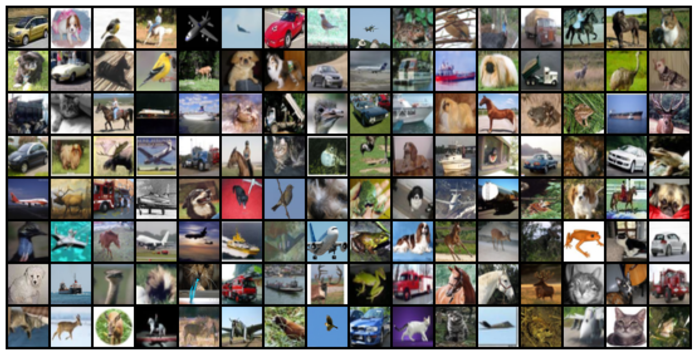

The objectives of the analysis were met as the model techniques used (ridge and random forests) predicted the house prices in India. Random forest method generated better house price predictions than ridge regression because it has additional and sophisticate features which deeply analyze the data. Input variables such as the grade of the house, living area, area of the house, latitudes, and longitudes play a major role in determining the house prices. A validation score of 87.27% was obtain from random forest model. This implies that the model is good and can be used to make decisions and policies on housing. However, the accuracy score of house prices prediction can be further improved by applying other techniques like XGBoost gradient descent, and hyperparameter tunings.
This project provides a comprehensive introduction to five key PyTorch tensor functions: zeros_like(), normal(), hstack(), sqrt(), and gather(). Each function is explained in detail, with clear examples demonstrating its usage, working cases, and potential pitfalls. The notebook covers the importance of these functions in various deep learning tasks, such as model initialization, random data generation, tensor manipulation, and mathematical operations. Additionally, it offers insights into the underlying principles, advantages, and practical applications of these functions, making it a valuable resource for anyone working with PyTorch and tensor operations in machine learning and deep learning projects.

This deep learning project focuses on training a feedforward neural network to classify images from the CIFAR10 dataset, which consists of 60,000 32x32 color images across 10 classes. The project guides you through exploring the dataset, setting up a training pipeline, experimenting with different network architectures and hyperparameters, and evaluating the model's performance. It provides a base model class and utilities for training on GPU, monitoring losses and accuracies, and recording results using the Jovian library. The goal is to achieve high accuracy on the test set by iteratively adjusting the model architecture, learning rates, and number of epochs.